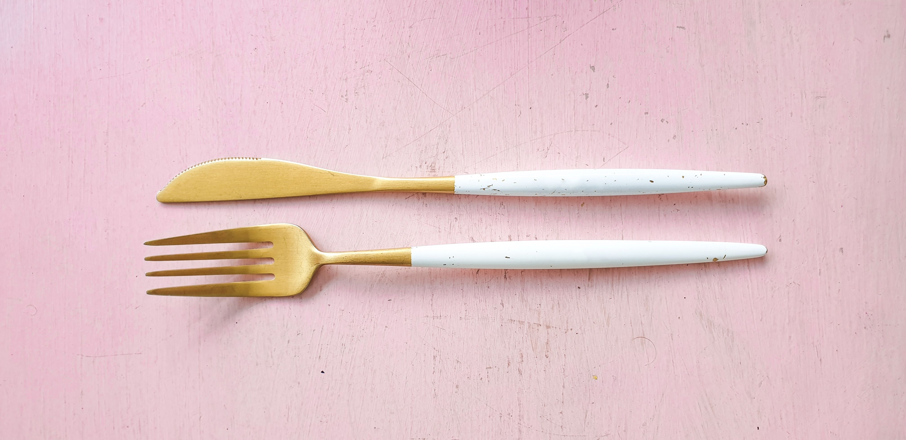

RePlate
RePlate is made up of a strong web development team which does most of the connecting and networking, volunteers who assist with food delivery, homeless shelters which give a warm place to eat together and a chance to meet those you directly help, and last but not least, our restaurants who provide us with yummy, safe food that was to be thrown away.
Our main goal at RePlate is to prevent food waste and use any extra food we can find to make sure less fortunate souls do not go to sleep hungry tonight. Our teams make sure that while we accomplish this goal, we do so in a safe, respectable manner.
Networking is key here. The most important thing is knowing who has food, where they are located, when we can get it. RePlate has reached out and worked together with several teams all over the US that set up individual homeless shelters with an abundance of food at each location. Communication, passion, love, and hard-work made our vision become a reality.